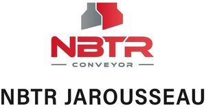

Trade Mark Journal No.2025/025 20 June 2025
WO0000001847025 (7,35,37,39,45)
Office of origin: France
Date of International Registration:21 November 2024
Date of designation in the UK:
21 November 2024

International priority date claimed: 21 May 2024
(France)
(5056047)
- Class 7
- Industrial material conveying machines; belt conveyors; automatic conveyors; belt conveyors [machines]; industrial cleaning machines; industrial floor-cleaning machines; machine tools; agricultural implements other than hand-operated; agricultural machines; suction machines for industrial use; automatic handling machines (manipulators); grinding machines; electric machines and apparatus for cleaning; moving walkways; waste extraction machines; waste recovery apparatus [machines].
- Class 35
- Advertising; commercial business management; retail and wholesale services connected with the sale of industrial machines, namely industrial material conveying machines, belt conveyors, automatic conveyors, belt conveyors [machines], industrial cleaning machines, industrial floor-cleaning machines, machine tools, agricultural implements other than hand-operated, agricultural machines, suction machines for industrial use, automatic handling machines (manipulators), grinding machines, electric machines and apparatus for cleaning, moving walkways, waste extraction machines, and waste recovery apparatus [machines]; retail and wholesale services connected with the sale of belt conveyors; product presentation and demonstration services.
- Class 37
- Industrial cleaning services; floor cleaning; waste removal services [cleaning]; providing information with respect to the cleaning of buildings; provision of information, advice and assistance with respect to cleaning; garbage collection installation; installation of industrial machines, installation of conveyor belts for floor cleaning; repair of industrial machines, repair of conveyor belts for floor cleaning.
- Class 39
- Waste transport services; waste disposal [transport]; waste removal [transport] services; materials transport services.
- Class 45
- Patent and trademark licensing services.
NBTR
Representative: Venner Shipley LLP, 200 Aldersgate London EC1A 4HD UNITED KINGDOM